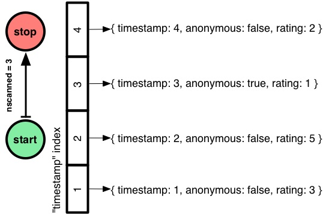
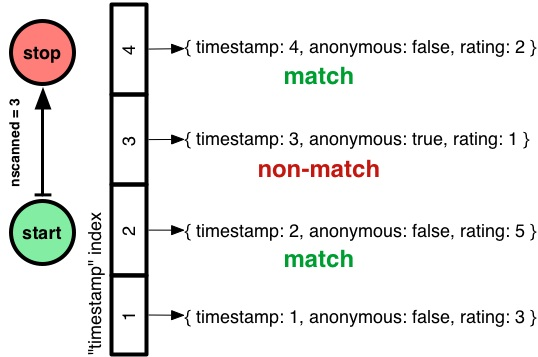
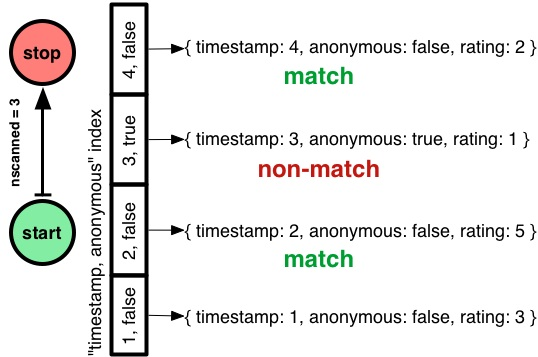
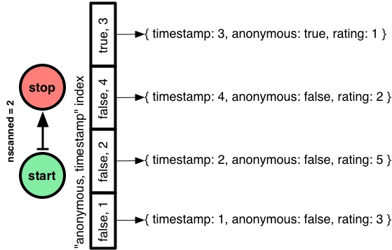
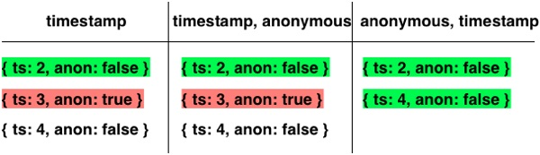
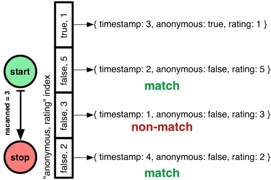
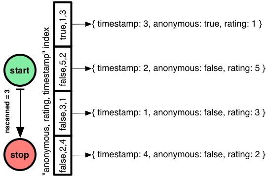

10gen工程师谈MongoDB组合索引的优化
A. Jesse Jiryu Davis —— 10gen工程师，从事MongoDB、Python及Tornado。在Dzone上分享了MongoDB中组合索引的最佳建立方法以及索引中字段的最优顺序。并通过explain（）输出的结果来验证实际性能，同时还分析了MongoDB的查询优化器的索引选择机制。
项目背景
预想中的项目是在MongoDB上建立一个类Disqus的评论系统（虽然Disqus使用的是Postgres，但是不影响我们讨论）。这里储存的评论可能是上万条，但是我们先从简单的4条谈起。每条评论都拥有时间戳（timestamp）、匿名（发送）与否（anonymous）以及质量评价（rating）这三个属性：
- { timestamp: 1, anonymous: false, rating: 3 }
- { timestamp: 2, anonymous: false, rating: 5 }
- { timestamp: 3, anonymous: true, rating: 1 }
- { timestamp: 4, anonymous: false, rating: 2 }
这里需要查询的是anonymous = false而且timestamp在2 – 4之间的评论，查询结果通过rating进行排序。我们将分3步完成查询的优化并且通过MongoDB的explain（）对索引进行考量。
范围查询
首先从简单的查询开始 —— timestamps范围在2-4的评论：
- > db.comments.find( { timestamp: { $gte: 2, $lte: 4 } } )
查询的结果很显然是3条。然而这里的重点是通过explain（）看MongoDB是如何去实现查询的：
- > db.comments.find( { timestamp: { $gte: 2, $lte: 4 } } ).explain()
- {
- "cursor" : "BasicCursor",
- "n" : 3,
- "nscannedObjects" : 4,
- "nscanned" : 4,
- "scanAndOrder" : false
- // ... snipped output ...
- }
先看一下如何读MongoDB的查询计划：首先看cursor的类型。“BasicCursor”可以称得上一个警告标志：它意味着MongoDB将对数据集做一个完全的扫描。当数据集里包含上千万条信息时，这完全是行不通的。所以这里需要在timestamp上加一个索引：
- > db.comments.createIndex( { timestamp: 1 } )
现在再看explain（）的输出结果：
- > db.comments.find( { timestamp: { $gte: 2, $lte: 4 } } ).explain()
- {
- "cursor" : "BtreeCursor timestamp_1",
- "n" : 3,
- "nscannedObjects" : 3,
- "nscanned" : 3,
- "scanAndOrder" : false
- }
现在cursor的类型明显变成了“BtreeCuor timestamp_1”（timestamp_1为之前定义的索引名称）。nscanned从4降到了3，因为这里Mongo使用了索引跳过了范围外的文档直接指向了需要查询的文档。

对于定义了索引的查询：nscanned体现了Mongo扫描字段索引的条数，而nscannedObjects则为最终结果中查询过的文档数目。n则表示了返回文档的数目。nscannedObjects至少包含了所有的返回文档，即使Mongo明确了可以通过查看绝对匹配文件的索引。因此可以得出nscanned >= nscannedObjects >= n。对于简单查询你可能期望3个数字是相等的。这意味着你做出了MongoDB使用的完美索引。
范围查询的基础上添加等值查询
然而什么情况下nscanned会大于n ？很显然当Mongo需要检验一些指向不匹配查询的文档的字段索引。举个例子，我需要过滤出anonymous = true的文档：
- > db.comments.find(
- ... { timestamp: { $gte: 2, $lte: 4 }, anonymous: false }
- ... ).explain()
- {
- "cursor" : "BtreeCursor timestamp_1",
- "n" : 2,
- "nscannedObjects" : 3,
- "nscanned" : 3,
- "scanAndOrder" : false
- }
从explain（）输出结果上来看：虽然n从3降到了2，但是nscanned和nscannedObjects的值仍然为3。Mongo扫描了timestamp从2到4的索引，这就包含了anonymous = true/false的所有情况。在文件检查完之前，更不会去滤掉下一个。

那么如何才能回到完美的nscanned = nscannedObjects = n 上来？这里尝试一个在timestamp和anonymous上的组合索引：
- > db.comments.createIndex( { timestamp:1, anonymous:1 } )
- > db.comments.find(
- ... { timestamp: { $gte: 2, $lte: 4 }, anonymous: false }
- ... ).explain()
- {
- "cursor" : "BtreeCursor timestamp_1_anonymous_1",
- "n" : 2,
- "nscannedObjects" : 2,
- "nscanned" : 3,
- "scanAndOrder" : false
- }
这次的情况好了一点：nscannedObjects从3降到了2。但是nscanned仍然为3！Mongo还是做了timestamp 2到4上索引的全扫描。当然当检查anonymous索引发现其值为true时，Mongo选择了直接跳过而没有进行文档扫描。因此这也是为什么只有nscanned的值仍为2的原因。

那么是否可以改善这个情况让nscanned也降到2？你可能已经注意到这点了：定义索引的次序存在问题。是的，这里应该是“anonymous，timestamp”而不是“timestamp，anonymous”：
- > db.comments.createIndex( { anonymous:1, timestamp:1 } )
- > db.comments.find(
- ... { timestamp: { $gte: 2, $lte: 4 }, anonymous: false }
- ... ).explain()
- {
- "cursor" : "BtreeCursor anonymous_1_timestamp_1",
- "n" : 2,
- "nscannedObjects" : 2,
- "nscanned" : 2,
- "scanAndOrder" : false
- }
对于MongoDB组合索引的关键字顺序问题和其他数据库都是一样的。假如使用anonymous作为索引的第一个关键字，Mongo则会直接调至anonymous = false文档做timestamp 2到4的范围扫描。

这里结束了探索的第一部分，简单的了解了一下MongoDB组合索引的优化思想。然而事实上这种情况只存在于理想之中。
不防设想一下索引中包含“anonymous”是否物有所值。打个比方：我们现在的系统拥上千万条的评论并且天查询量也上千万，那么缩减nscanned必将大幅度的提升系统的吞吐量。但是如果anonymous部分在索引中很少用到，那么显而易见的可以把它从索引中剔除为经常用到的字段节省空间。另一方面：双字段索引肯定比单字段索引占更多的内存，因此单字段的索引在内存的开销上无疑也是更胜一筹。而在这里的情况就是：只有anounymous = true占很大比重的时候才会在全方面中得利。既然要全面考虑，那么我们还必须看一下MongoDB索引的选择机制。
MongoDB的索引选择机制
首先来看一个比较有趣的事情：在先前的例子中我们并没有删除索引，这样的话在我们建立的3个索引中MongoDB总是会择优而取。为什么会出现这种情况？
MongoDB的优化程序会在对比中选择更优秀的索引。首先，它会给查询做一个初步的“最佳索引”；其次，假如这个最佳索引不存在它会做尝试来选出表现最好的索引；最后优化器还会记住所有类似查询的选择（只到大规模文件变动或者索引上的变动）。
那么优化器是如何定义查询的“最佳索引”。最佳索引必须包含查询中所有可以做过滤及需要排序的字段。此外任何用于范围扫描的字段以及排序字段都必须排在做等值查询的字段之后。如果存在不同的最佳索引，那么Mongo将随机选择。在这个例子中“anonymous，timestamp”明显是最佳索引，所以很迅速的就做出了选择。
鉴于这样表述很苍白，下面来详细的看一下第二部分是如何工作的。当优化器需要在一堆没有特别优势的索引中选择一个时，它会收集所有相关的索引进行相关的查询，并选出最先完成的索引。
举个例子下面是个查询语句：
- db.comments.find({ timestamp: { $gte: 2, $lte: 4 }, anonymous: false })
全部的3个索引都是相关的，所以MongoDB将3条索引以任意的顺序连接起来并标注了每条索引依次进入的入口：

所有索性都返回了如下结果:
- { timestamp: 2, anonymous: false, rating: 5 }
首先。在第二步，左边和中间的索引都返回了：
- { timestamp: 3, anonymous: true, rating: 1 }
而右边的索引明显胜于其他的两条索引：
- { timestamp: 4, anonymous: false, rating: 2 }
在这个竞赛中，在右方的索引明显比其他的两个先完成查询。那么在下一次比赛前，它会一直作为最佳索引存在。简而言之：存在多条索引的情况下，MongoDB首选nscanned值最低的索引。
等值、范围查询及排序
既然我们拥有了timestamps在2到4之间的完美索引，那么我们的最后一步是进行排序。先从降序开始：
- > db.comments.find(
- ... { timestamp: { $gte: 2, $lte: 4 }, anonymous: false }
- ... ).sort( { rating: -1 } ).explain()
- {
- "cursor" : "BtreeCursor anonymous_1_timestamp_1",
- "n" : 2,
- "nscannedObjects" : 2,
- "nscanned" : 2,
- "scanAndOrder" : true
- }
在之前通常都是这么做的，现在同样很好：nscanned = nscannedObjects = n。但是千万别忽略这条：scanAndOrder = true。这就意味着MongoDB会把所有查询出来的结果放进内存，然后进行排序，接着一次性输出结果。然而我们必须考虑：这将占用服务器大量的CPU和RAM。取代将结果分批次的输出，Mongo把他们全部放进内存并一起输出将大量争用应用程序服务器的资源。最终Mongo会强行给数据做一个32MB的限制，然后在内存里给他们排序。虽然我们现在讨论中只有4条评论，但是我们设计的是上千万条的系统！
那这里该如何处理scanAndOrder = true这个情况？我们需要加一个索引，让Mongo可以直接转到anonyous = false部分，并且要求的顺序扫描这个部分：
- > db.comments.createIndex( { anonymous: 1, rating: 1 } )
Mongo会使用这个索引吗？当然不会，因为这条索引在比赛中赢不了拥有最小nscanned的索引。优化器无法识别哪条索引会有益于排序。
所以需要使用hint来强制Mongo的选择：
- > db.comments.find(
- ... { timestamp: { $gte: 2, $lte: 4 }, anonymous: false }
- ... ).sort( { rating: -1 }
- ... ).hint( { anonymous: 1, rating: 1 } ).explain()
- {
- "cursor" : "BtreeCursor anonymous_1_rating_1 reverse",
- "n" : 2,
- "nscannedObjects" : 3,
- "nscanned" : 3,
- "scanAndOrder" : false
- }
语句hint中存在争议和CreateIndex是差不多的。现在nscanned = 3但是scanAndOrder = false。现在Mongo将反过来查询“anonymous，rating”索引，获得拥有正确顺序的评论，然后再检查每个文件的timestamp是否在范围内。

这也是优化器为什么不会选择这条索引的而去执行这个拥有低nscanned但是完全在内存排序的旧“anonymous，timestamp”索引的原因。
我们以牺牲nscanned的代价解决了scanAndOrder = true的问题；既然nscanned已不可减少，那么我们是否可以减少nscannedObjects？我们向索引中添加timestamp，这样一来Mongo就不用去从每个文件中获取了：
- > db.comments.createIndex( { anonymous: 1, rating: 1, timestamp: 1 } )
同样优化器不会赞成这条索引我们必须hint它：
- > db.comments.find(
- ... { timestamp: { $gte: 2, $lte: 4 }, anonymous: false }
- ... ).sort( { rating: -1 }
- ... ).hint( { anonymous: 1, rating: 1, timestamp: 1 } ).explain()
- {
- "cursor" : "BtreeCursor anonymous_1_rating_1_timestamp_1 reverse",
- "n" : 2,
- "nscannedObjects" : 2,
- "nscanned" : 3,
- "scanAndOrder" : false,
- }
终于尽善尽美了。Mongo遵循了类似之前的计划，并且nscannedObjects也降到了2。

当然必须得考虑给索引加入timestamp是否是值得的，因为timestamp给内存带来的附加空间可能会让你得不偿失。
最终方案
最后综合一下给出包含了等值测试、排序及范围过滤查询的索引建立方法：
1. 等值测试
在索引中加入所有需要做等值测试的字段，任意顺序。
2. 排序字段（多排序字段的升/降序问题 ）
根据查询的顺序有序的向索引中添加字段。
3. 范围过滤
以字段的基数（Collection中字段的不同值的数量）从低到高的向索引中添加范围过滤字段。
当然这里还有一个规则：如果索引中的等值或者范围查询字段不能过滤出Collection中90%以上的文档，那么把它移除索引估计会更好一些。并且如果你在一个Collection上有多个索引，那么必须hint Mongos。
对于组合索引的建立，有很多的因素去决定。虽然本文不能让你直接确定出一个最优的索引，但是无疑可以让你缩小索引建立时的选择。
原文链接：Optimizing MongoDB Compound Indexes （编译/仲浩 审校/王旭东）
如果你想感受大数据的魅力，11月30日-12月1日，北京新云南皇冠假日酒店，业内将迎来国内大数据领域最纯粹的技术盛会——HBTC 2012(Hadoop&BigData Technology Conference 2012）。Hadoop及云计算生态系统的力量齐聚北京，欢迎热爱开源的朋友们加入！
更多精彩内容，请关注新浪微博：@CSDN云计算；大会官网：HBTC 2012
本文为CSDN编译整理，未经允许不得转载。如需转载请联系market@csdn.net
- 顶
- 9
- 踩
- 2
- 相关文章
- 最新报道
- CSDN官方微信
- 扫描二维码,向CSDN吐槽
- 微信号：CSDNnews

微博关注
相关热门文章


01.jpg)

为什么要用一个document db来存评论信息？
回复(0) 支持(0) 反对(0) 举报(0) | 0条回复..
翻译的不够准确，建议看原文：http://java.dzone.com/articles/optimizing-mongodb-compound?mz=36885-nosql
回复(0) 支持(1) 反对(0) 举报(0) | 0条回复..